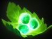
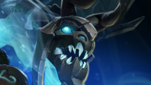

<!DOCTYPE html><html><head><meta charset="utf-8"><meta name="viewport" content="width=device-width, initial-scale=1, maximum-scale=1"><title>Presentasi | Hero Guide : Sniper</title><link rel="stylesheet" type="text/css" href="bower_components/prism/themes/prism.css"><link rel="stylesheet" type="text/css" href="bower_components/todc-bootstrap-main/dist/css/bootstrap.min.css"><link rel="stylesheet" type="text/css" href="styles/main-presentation.css"></head><body></body></html><nav role="navigation" class="navbar navbar-inverse"><div class="container"><div class="navbar-header"><button type="button" data-toggle="collapse" data-target="presentation-chooser" class="navbar-toggle"><span class="sr-only"></span><span class="icon-bar"></span><span class="icon-bar"></span><span class="icon-bar"></span></button><a href="index.html" class="navbar-brand">Presentasi</a></div><div id="presentation-chooser" class="collapse navbar-collapse"><ul class="nav navbar-nav"><li class="dropdown"><a data-toggle="dropdown" href="#" class="dropdown-toggle">Pilih Subtopik <b class="caret"></b></a><ul class="dropdown-menu"><li><a href="1Penjelasan.html">Penjelasan DotA 2 Secara Umum</a></li><li><a href="2Role.html">Role</a></li><li><a href="3Warding.html">Warding</a></li><li><a href="4Sniper.html">Hero Guide : Sniper</a></li></ul></li></ul></div></div></nav><article id="presentation"><section><h1>SNIPER</h1><p>Ranged - <strong>Carry</strong></p></section><section><h2>OVERVIEW</h2><hr></section><section><h2>BIO</h2><hr><p style="border:3px solid green;text-align:justify;font-size:18px"><Kardel>Kardel Sharpeye was born deep in the mountains of Knollen where, since time immemorial, Keen Folk have survived by hunting the strange, cliff-dwelling steepstalkers above their village, shooting them from a distance and collecting the carcasses where they fell. Sharpeye was among the best of these strange mountain keens for whom projectile weapons are but another appendage, and to shoot is as natural as to touch. On his day of summoning, when he was to gain full standing in his village, Sharpeye took the ancient test: a single shot from the valley floor to strike a beast down from the cliffs. To miss was to be dishonored. With his entire village standing vigil, Sharpeye took his shot. A steepstalker fell; the crowd cheered. But when the carcass was collected, the village grew silent, for the elders found that the bullet had pierced its glittering central eye then fallen to be clenched in the steepstalker's mandibles. This ominous sign was the literal opening of a dark prophecy, foretelling both greatness and exile for the gunman who made such a shot. Sharpeye the Sniper was thus, by his own skill, condemned to make his way apart from his people and unwelcome back among them until he has fulfilled the remainder of the prophecy by attaining legendary stature on a field of battle.</Kardel></p></section><section><h2>SKILL</h2></section><section><h2>Shrapnel (Active)</h2><p style="border:3px solid green;text-align:justify;font-size:18px">Fires a ball of shrapnel that showers the target area in explosive pellets. Enemies are subject to damage and slowed movement. Reveals the targeted area. <br>Radius : 400<br>Cast Range : 1800<br>Effect Radius : 450<br>Damage per Second : 12 / 24 / 36 / 48<br>Move Speed Slow : 15% / 20% / 25% / 30%<br>Slow Duration : 2, Shrapnel Duration : 10<br>Number of Charges : 3, Charge Restore Time : 55<br>Mana Cost : 50, Cooldown Time : 40<br></p></section><section><h2>Headshot (Passive)</h2><p style="border:3px solid green;text-align:justify;font-size:18px">Sniper increases his accuracy, giving a chance to deal extra damage and slow.<br>Slow Duration : 0.5<br>Chance : 40%<br>Move Speed Slow : 100%<br>Attack Speed Slow : 100<br>Damage Bonus : 15 / 40 / 65 / 90</p></section><section><h2>Take Aim (Passive)</h2><p style="border:3px solid green;text-align:justify;font-size:18px">Extends the attack range of Sniper's rifle.<br>Range Bonus : 100 / 200 / 300 / 400<br>Total range : {650/750/850/950}<br>Level 3 and 4 of this ability allow  Sniper to out-range towers.</p></section><section><h2>Assassinate (Active)</h2><p style="border:3px solid green;text-align:justify;font-size:18px">Sniper locks onto a target enemy unit, and after 1.7 seconds, fires a devastating shot that deals damage at long range.<br>Range : 2000 / 2500 / 3000<br>Damage : 320 / 485 / 650<br>Mana Cost : 175 / 275 / 375<br>Cooldown Time : 20 / 15 / 10</p></section><section><h2>Item Build for Noob</h2></section><section><h2>Early Item</h2></section><section><h2>Penjelasan</h2></section><section><h2>Tango</h2><p>Salah satu item healing utama yang akan dibeli oleh hero di early game agar dapat bertahan lama di lane.</p></section><section><h2>Healing Salve</h2><p>Sama seperti tango,tetapi memiliki tingkat regenerasi Hp yang lebih cepat dibandingkan dengan Tango. Dibeli di early game agar dapat bertahan lama di lane.</p></section><section><h2>Iron Branch</h2><p>Item utama untuk early game yang sangat murah, hanya 50 gold dan berfungsi untuk menambah semua status sebesar +1.</p></section><section><h2>Ring of Protection</h2><p>Disarankan untuk membeli Ring of Protection pada early game, disebabkan karena darah sniper yang sangat tipis. Menambah armor sebesar +3.</p></section><section><h2>Mid Item</h2></section><section><h2>Penjelasan</h2></section><section><h2>Ring of Basilius</h2><p style="border:3px solid green;text-align:justify;font-size:18px">Item yang penting untuk mempercepat regenerasi mana agar dapat nge-spam skill. Menambah +6 Damage, +3 Armor, dan mana regen +0,65.</p></section><section><h2>Boots of Speed</h2><p style="border:3px solid green;text-align:justify;font-size:18px">Item utama untuk seluruh hero, untuk mempercepat Movespeed. Item yang harus cepat dibeli oleh sniper yang rentan terhadap ganking, agar meningkatkan survivability sniper. +50 Movespeed</p></section><section><h2>Ring of Aquila</h2><p style="border:3px solid green;text-align:justify;font-size:18px">Upgrade dari Ring of Basilius, untuk menambah status dan juga regenerasi mana. Menambah +3 Strength, +9 Agility, +3 Intelligence, +9 Damage, +3 Armor dan mana regen +0,65.</p></section><section><h2>Phase Boots</h2><p style="border:3px solid green;text-align:justify;font-size:18px">Sepatu yang pas untuk sniper yang memiliki movespeed lambat dan juga menambah damage. Menambah +50 Movespeed +24 Damage dan jika item diaktifkan maka akan mendapat tambahan movespeed 16% dengan durasi 3,6 detik.</p></section><section><h2>Bracer</h2><p style="border:3px solid green;text-align:justify;font-size:18px">Item penambah status yang cocok untuk sniper yang memiliki HP yang sedikit. +6 Strength, +3 Agility, +3 Intelligence, +3 Damage.</p></section><section><h2>Mask of Madness</h2><p style="border:3px solid green;text-align:justify;font-size:18px">Item yang penting untuk sniper yang memiliki attack speed yang lambat, dengan item ini didukung skill Headshot akan membuat Sniper menjadi carry yang mengerikan asalkan tetap jaga jarak dengan hero lawan. Jika diaktifkan akan menambah +100 attack speed, +17% movespeed tetapi akan mendapat extra damage sebesar 30%, dengan durasi 12 detik. Dan juga lifesteal sebesar 20%.</p></section><section><h2>Late Item</h2></section><section><h2>Penjelasan</h2><p>Begitu banyak item yang cocok untuk Sniper. Jadi silahkan pilih item yang cocok dengan Gameplay Anda.</p></section><section><h2>Black King Bar</h2><p style="border:3px solid green;text-align:justify;font-size:18px">	Item yang harus dibeli jika banyak Disabler lawan. Jika diaktifkan item ini berfungsi untuk mendapat Spell Immunity dan 100% Magic Damage Resistance. Menambah +10 Strength dan +24 Damage.</p></section><section><h2>Butterfly</h2><p style="border:3px solid green;text-align:justify;font-size:18px">	Item yang harus dibeli untuk semua carry-agi. Menambah +30 Agility, +30 Damage, +35% Evasion, +30 Attack Speed. Jika diaktifkan akan mengubah evasion menjadi 25% MoveSpeed selama 6 detik.</p></section><section><h2>Crystalys</h2><p style="border:3px solid green;text-align:justify;font-size:18px">	Item yg dapat memberikan peluang untuk critical damage sebesar 175% dengan peluang untuk setiap pukulan 20%. Menambah +30 Damage.</p></section><section><h2>Daedalus</h2><p style="border:3px solid green;text-align:justify;font-size:18px">	Item yang diupgrade dari Crystalys menambah peluang untuk critical damage sebesar 240% dengan peluang 25%. Menambah +81 Damage.</p></section><section><h2>Eul's Scepter of Divinity</h2><p style="border:3px solid green;text-align:justify;font-size:18px">	Item yang menambah +40 MoveSpeed, dan juga meregenerasikan mana sebesar 150% dengan bonus +10 Intelligence. Jika diaktifkan akan menerbangkan target dan akan invulnerable selama 2,5 detik. Item yang cocok untuk Sniper agar meningkatkan survivability Sniper dan dapat menge-spam spell.</p></section><section><h2>Eye of Skadi</h2><p style="border:3px solid green;text-align:justify;font-size:18px">Item yang sangat kuat dan mahal, disarankan untuk membeli nya jika sudah yakin. Item ini sangat mengerikan jika dipakai oleh sniper karena MoveSpeed dan AttackSpeed lawan yang ditembak oleh sniper akan berkurang sebesar 35% untuk MoveSpeed dan -45 untuk AttackSpeed dengan durasi 2,5 detik. Juga menambah status yang sangat gede yaitu +25 Strength, +25 Agility, +25 Intelligence, +250 HP dan +250 Mana.</p></section><section><h2>Maelstrom</h2><p style="border:3px solid green;text-align:justify;font-size:18px">Item yang bagi player yang suka dengan Attack Speed, manambah +25 Attack Speed dan +24 Damage. Item ini dapat memberikan peluang 25% untuk mengeluarkan Chain Lightning yang meng-hit 4 target lawan dengan damage sebesar 120 per target.</p></section><section><h2>Satanic</h2><p style="border:3px solid green;text-align:justify;font-size:18px">Item yang kuat dan juga mahal. Dengan membeli item ini, Sniper akan susah untuk di kill karena dengan lifesteal dari item ini yang sangat ganas sebesar 175% dengan durasi 3,5 detik dan juga menambah +25 Strength, +20 Damage +5 Armor dan 25% Lifesteal.</p></section><section><h2>Shadow Blade</h2><p style="border:3px solid green;text-align:justify;font-size:18px">	Item yang cocok untuk sniper yang tidak memiliki skill untuk kabur jika di ganking. Item ini berfungsi untuk membuat pengguna menghilang(invisible) dan menambah 20% movespeed selama 14 detik. Item ini menambah +22 Damage dan +30 Attack Speed.</p></section><section><h2>Strategy</h2></section><section><h2>Early</h2><p style="border:3px solid green;text-align:justify;font-size:18px">Untuk Strategy Early Game, pilihlah lane, saya sarankan mengambil Lane bawah jika Radiant atau Lane atas jika Dire agar lebih susah untuk di ganking lawan. Jika pilih mid saya sarankan untuk fokuskan untuk menaikkan skill Shrapnel dan Take Aim agar tetap menjaga jarak dengan hero musuh yang biasanya adalah nuker. Untuk Lane atas jika Radiant atau Lane bawah jika Dire, satu lane lah dengan support yang kuat karna resiko terkena ganking pada lane tersebut sangat tinggi dengan melihat Sniper tidak memiliki skill untuk kabur. Lane manapun yang kamu pilih, tetaplah main safe dan kumpulkan uang untuk secepatnya membeli Phase Boots. Dan tetap spam Shrapnel setiap mana penuh agar hero lawan tidak berani mendekati area yang kamu Shrapnel. Usahakan mengambil Kill sebanyak mungkin jika memungkinkan, dan pastinya creeping sebanyak mungkin.</p></section><section><h2>Mid</h2><p style="border:3px solid green;text-align:justify;font-size:18px">Untuk Mid Game, tetap main safe, jangan sampai kena ganking karena akan berdampak buruk untuk Late Game kamu. Tetap stay dengan teman support kamu dan fokus untuk creeping dan kalau bisa kill hero dengan Assassinate kamu yang sangat jauh range nya. Untuk Mid Game setidaknya kamu sudah membeli Mask of Madness untuk memberi peluang kill yang lebih besar dan secepatnya menghancurkan tower lawan.</p></section><section><h2>Late</h2><p style="border:3px solid green;text-align:justify;font-size:18px">Nah, akhirnya sampai juga ke masa kejayaan Sniper. Sniper adalah carry yang sangat mengerikan di Late Game, tergantung dengan gaya permainan kamu di Early dan Mid. Untuk di Late, tetaplah bersama teman" kamu, karena banyak terjadi WAR pada Late Game, dan yang harus kamu lakukan adalah menjaga jarak saat WAR berlangsung, pastikan untuk membunuh hero" lawan dan jangan lupa dengan Skill Assassinate yang kamu punya untuk membunuh hero lawan yang mencoba untuk kabur ;)</p></section><section><h2>Best "Friends"</h2></section><section><h2>Warders</h2><p style="border:3px solid green;text-align:justify;font-size:18px">Hero2 yg punya skill ward dan smacamnya akan sangat menghemat pengeluaranmu membeli ward. Km ga perlu se line sm mreka, mreka hanya memasang atau membawa ward nya ke line mu, atau Hero summoner yang bisa menggunakan unitnya untuk scouting (mata-mata).</p></section><section><h2>Contoh Hero Warders</h2></section><section><h2>Disabler</h2><p style="border:3px solid green;text-align:justify;font-size:18px">Karena Sniper adalah hero carry, jd disabler sgt menguntungkan, dengan skill disabler nya , Sniper bisa melontarkan lebih banyak serangan.</p></section><section><h2>Contoh Hero Disabler</h2></section></article><script src="bower_components/bespoke.js/dist/bespoke.min.js"></script><script src="bower_components/bespoke-bullets/dist/bespoke-bullets.min.js"></script><script src="bower_components/bespoke-scale/dist/bespoke-scale.min.js"></script><script src="bower_components/bespoke-hash/dist/bespoke-hash.min.js"></script><script src="bower_components/bespoke-progress/dist/bespoke-progress.min.js"></script><script src="bower_components/bespoke-state/dist/bespoke-state.min.js"></script><script src="bower_components/prism/prism.js"></script><script src="bower_components/prism/components/prism-bash.min.js"></script><script src="scripts/main.js"></script><script src="bower_components/jquery/jquery.min.js"></script><script src="bower_components/todc-bootstrap-main/dist/js/bootstrap.min.js"></script>